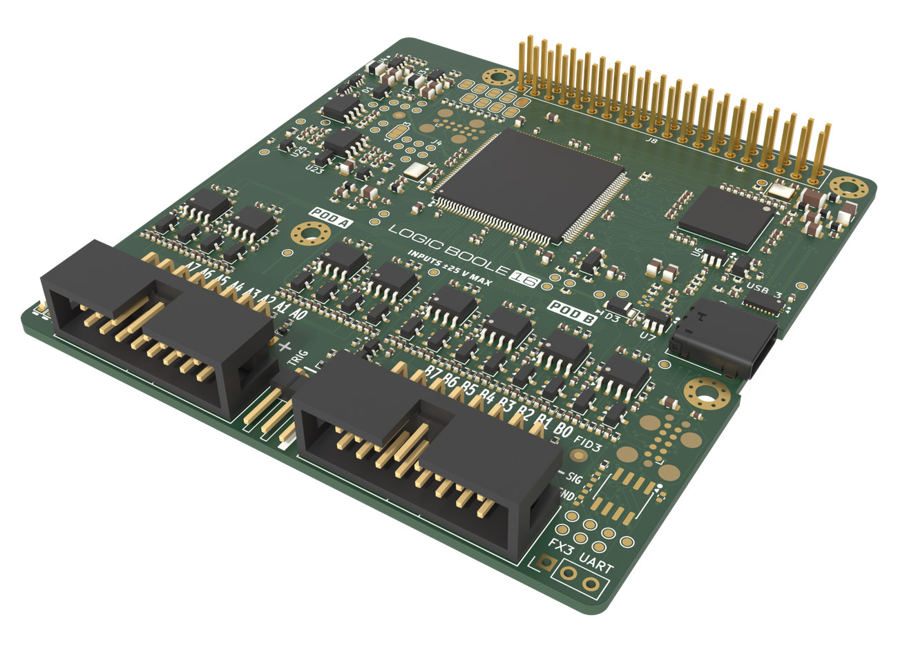

Sixteen channels at 200 MS/s, or four at 750 MS/s, over USB 3, through 1 MΩ inputs for 1.2 to 5 V logic. It runs from one USB-C cable on a computer, or mounted on a Raspberry Pi 4 or 5 as a HAT+. Open source: the board, the FPGA design, the firmware and the software.
Logic Boole 16 is a 16-channel digital logic analyzer on one 82 × 86 mm board. Signals come in on two keyed pods, pass through sixteen identical protected inputs to an FPGA that samples and triggers on them, and leave over USB 3 to the host: a computer, or the Raspberry Pi the board is mounted on. The host runs the software and holds the capture. The whole design is published under open licenses (section 12).

| Main parts | Spartan-6 XC6SLX9 FPGA, EZ-USB FX3 USB controller, 16 fast comparators |
| Power | 5 V from USB-C or the Pi's header, about 1 W |
| Host link | USB-C: USB 3 at 5 Gbit/s, or USB 2.0 |
| Probing | 2 × keyed 16-pin pods, 3-pin trigger header |
| Size | 82.0 × 86.0 mm (3.23 × 3.39 in) |
| Design files | Open source, on GitHub (section 12) |
| In the box | 1 × board, assembled. No USB cable, spacers, screws or leads: section 7 lists what to get |
For board V1.0.0, which carries the mark REV C on its back. Input figures are at the probe pin of the pod connector. Figures are at room temperature. Section 13 says what was measured, and on which boards.
| Parameter | Min | Typ | Max | Unit | Notes |
|---|---|---|---|---|---|
| Channels | 16 | Digital. Two pods of 8: A0–A7 and B0–B7 | |||
| Sample rate | 200 | MS/s | On all 16 channels: 5 ns between samples, 4.95 to 5.05 ns measured. Lower rates are 200 MS/s divided by a whole number | ||
| Sample rate, 8 channels | 375 | MS/s | Pod A or pod B, with the fast FPGA design (section 6): 2.67 ns between samples, 2.66 to 2.67 ns measured | ||
| Sample rate, 4 channels | 750 | MS/s | A0–A3, A4–A7, B0–B3 or B4–B7, with the fast FPGA design: 1.33 ns between samples, 1.329 to 1.337 ns measured | ||
| Streaming over USB 3, any signal | 100 | MS/s | All 16 channels in the raw format: two samples in each 32-bit word, 200 MB/s | ||
| Streaming, fast FPGA design | 750 | MS/s | Any signal, in the raw format: 4 channels at 750 MS/s, 8 at 375 or 16 at 187.5, each 375 MB/s | ||
| Streaming over USB 3, run-length | 200 | MS/s | All 16 channels, for signals that change in up to 96 million samples a second: one word for each sample that differs from the one before. A 48 MHz clock streamed whole for 1 s | ||
| Any signal at 200 MS/s | 0.89 M | samples | A signal that changes in 100 million samples a second or more fills the board's buffers. The capture ends there, after 4.5 ms, whole to its last sample | ||
| Streaming over USB 2.0 | 22 | MS/s | All 16 channels in the raw format, any signal: 44 MB/s. Run-length at 200 MS/s for signals that change in up to 11 million samples a second | ||
| Kept from before the trigger | 8184 | words | 16,368 samples in the raw format. In the run-length format 8184 changes, however long they took | ||
| Capture length | Limited by the host's memory. The longest so far is 600 million samples | ||||
| Input signal frequency, 750 MS/s | 200 | MHz | Every period of a clock at 100, 150, 180 and 199.9 MHz on each of the 16 inputs of one board, four at a time, with 3.3 V logic and the threshold at 1.56 V | ||
| Input signal frequency, 200 MS/s | 85 | MHz | Every period of a clock was seen at 50, 70, 80 and 85 MHz on each of the 16 inputs of one board, and on the five inputs tried of a second | ||
| Input pulse length | 6 | ns | At 200 MS/s. A half period at 85 MHz is 5.9 ns. A pulse shorter than the 5 ns between samples can be missed | ||
| Input pulse length, 750 MS/s | 2.5 | ns | A half period at 200 MHz. A pulse shorter than the 1.33 ns between samples can be missed | ||
| Pulse length error | ±0.6 | ns | At 85 MHz pod A reads a clock high for 51 to 53 % of the time and pod B for 45 to 48 %: the first boards have a different comparator on each pod (section 14). At 200 MHz, 57 to 62 % and 52 to 54 % | ||
| Capture clock | 50 | MHz | The circuit's own clock on any input: a sample at its rising edges, its falling edges or both. The data must be steady 15 ns before the edge | ||
| Trigger output delay | 75–80 | ns | From the trigger sample at the inputs to TRIG OUT. A glitch filter adds its own time and 20 ns | ||
| Trigger input delay | 5 | ns | The trigger sample is the sample in which an input shows the same edge, or the one after it. Tried from 100 kHz to 50 MHz | ||
| Glitch filter | off | 1.25 | µs | For each channel: off, or 10 ns to 1.25 µs in 5 ns steps. A 25 MHz clock passes at 15 ns and is removed at 25 ns | |
| Timebase accuracy | ±50 | ppm | The 24 MHz oscillator over temperature and five years |
| Parameter | Min | Typ | Max | Unit | Notes |
|---|---|---|---|---|---|
| Logic level | 1.2 | 5 | V | ||
| Threshold range | 0.3 | 3.0 | V | Set separately for pod A and pod B. All 16 inputs read a 3.3 V pattern right at every setting from 0.2 to 3.0 V | |
| Threshold step | 0.764 | mV | A 12-bit setting | ||
| Threshold voltage | ±10 | mV | The voltage the board makes against the setting, as seen from the probe: read at 0.30, 1.56 and 3.00 V on both pods of one board | ||
| Threshold accuracy | ±100 | mV | With the input divider's and the comparator's errors: at any setting, without calibration, on 99.7 % of channels | ||
| Hysteresis | 25 | 60–80 | 100 | mV | At every threshold setting |
| Input resistance | 1.0 | 1.08 | MΩ | To ground: the divider's two resistors | |
| Input capacitance | 8.6 | 10 | pF | To ground | |
| Channel-to-channel skew | 1.4 | 5 | ns | Between the earliest and the latest of the 16 inputs of one board. Pod B is 0.2 to 0.6 ns ahead of pod A. The 5 ns is one sample at 200 MS/s | |
| Input voltage, continuous | −25 | +25 | V | On any channel, with the board powered or not |
Nine of the Raspberry Pi's header pins, through the bus jumpers of section 5.
| Parameter | Min | Typ | Max | Unit | Notes |
|---|---|---|---|---|---|
| Lines | 9 | I²C1, the UART and SPI0. Each takes the place of one channel, A0 to A7 and B0, so a capture still has 16 | |||
| Sample rate | 200 | MS/s | The capture's rate. A line is sampled, filtered and triggered on like the channel it replaces | ||
| Logic level | 3.3 | V | No threshold setting: low below 0.8 V, high above 2.0 V | ||
| Input resistance | 7 | 17.5 | kΩ | To ground: 1 kΩ in series and the FPGA pin's pull-down, which draws 0.2 to 0.55 mA from a line at 3.3 V | |
| Input capacitance | 10 | pF | The FPGA pin, behind the 1 kΩ. The board's track adds to it | ||
| I²C high level, jumper closed | 2.6 | 3.0 | V | At the Pi's pin: the Pi's 1.8 kΩ pull-up against the FPGA's pull-down. 3.3 V with the jumper open | |
| Input voltage | 0 | 3.6 | V | 3.3 V logic only. Not 5 V tolerant, and no protection beyond the 1 kΩ |
| Parameter | Min | Typ | Max | Unit | Notes |
|---|---|---|---|---|---|
| Trigger output level | 3.3 | V | CMOS output through 33 Ω. High from the trigger to the capture's last sample | ||
| Trigger input level | 3.3 | 5 | V | Schmitt-trigger input for 3.3 V logic, 100 kΩ to ground. It tolerates 5 V logic |
| Parameter | Min | Typ | Max | Unit | Notes |
|---|---|---|---|---|---|
| USB 3 link rate | 5 | Gbit/s | USB-C, in either plug orientation | ||
| Data to the host, USB 3 | 384 | MB/s | 96 million words a second in a capture. 391 MB/s for 10 minutes on a Raspberry Pi 5 with an earlier test design, every word checked | ||
| USB 2.0 link rate | 480 | Mbit/s | The fallback on a USB 2.0 cable, port or host: 44 MB/s to the host | ||
| Supply voltage | 5.0 | 5.5 | V | From USB-C, from the Pi's 5 V pins, or from both | |
| Supply current | 0.18 | 0.5 | A | One board: 0.05 A before the host has loaded it, 0.14 A loaded and idle, 0.18 A streaming at 393 MB/s with an earlier test design. Any USB port can supply it. No USB Power Delivery | |
| Power | 0.95 | 2.5 | W |
Use a cable rated for USB 3 (5 Gbit/s) with a USB-C plug for the board, into a USB 3 port. On a charge-only or USB 2.0 cable, or on a USB 2.0 port, the board still works, at USB 2.0 rates. Any USB port can power it.
| Size | 82.0 × 86.0 mm (3.23 × 3.39 in), 1.6 mm thick. Section 10 has the drawing |
| Mounting holes | 4 × Ø2.7 mm for M2.5 screws, on the Raspberry Pi's 58 × 49 mm pattern. Joined to ground |
| PCB | 4 layers, gold (ENIG) finish, green solder mask |
| Tallest parts | The pod connectors, about 11 mm above the board. The 40-pin header's pins stand 8.2 mm above it |
| Back | Only the stacking header's body, 13.5 mm. Nothing else is fitted underneath |
| Raspberry Pi | HAT+ with ID EEPROM, stackable class, for the Pi 4 and Pi 5. 16 mm between the Pi and the board |
| Use | Indoors, at 0 to 40 °C |
Beyond these limits the board may be damaged. Inside them, the specifications of section 2 say what it does.
| Parameter | Min | Max | Unit | Notes |
|---|---|---|---|---|
| Pod inputs A0–A7 and B0–B7 | −25 | +25 | V | To ground, continuously, powered or not |
| Trigger input | 0 | 5.5 | V | |
| Trigger output | An output: do not drive it | |||
| Supply, USB-C or the Pi's 5 V pins | 5.5 | V | ||
| Pi bus lines, jumpers closed | 0 | 3.6 | V | 3.3 V logic only. They do not tolerate 5 V |
| Electrostatic discharge | ±8 | kV | Contact, IEC 61000-4-2, on the USB-C, pod and trigger pins | |
| Ambient temperature, operating | 0 | 40 | °C | Indoors |
The inputs are not isolated. Their ground is the USB cable's ground and the Raspberry Pi's ground: see section 9, Probing and safety.
Everything you plug into is on an edge: the pods and the trigger header on the front edge, USB-C on the right, the 40-pin header along the back. Signals run from the pods through the input channels to the FPGA in the middle and the FX3 at the back right. Positions are as seen from the component side, with the pods nearest you.
| Where | What | Notes |
|---|---|---|
| Front edge, left | Pod A | Channels A0–A7. Keyed 2 × 8 box header, with each channel's name printed above its pin |
| Front edge, middle | Trigger header | 3 pins, marked TRIG: IN, OUT and − (ground) |
| Front edge, right | Pod B | Channels B0–B7, with their own threshold |
| Behind the pods | 16 input channels | An ESD diode, a divider and a clamp for each channel, then eight dual comparators |
| Left edge | Thresholds | A 2.5 V reference and one threshold circuit for each pod |
| Middle | Spartan-6 FPGA | Samples, triggers, filters and buffers, on a 100 MHz clock made from a 24 MHz oscillator |
| Back right | FX3 USB controller | Carries the samples to the host |
| Right edge | USB-C | Power and data, marked USB 3. The plug goes in from the right |
| Back edge | 40-pin stacking header | Fitted from underneath. Its pins come through the top for a second HAT |
| In front of the header, left | Pi bus jumpers | Nine solder jumpers, open as shipped, and the ID address jumper. See section 5 |
| Back left | Power | Two ideal diodes take 5 V from USB or from the Pi. Regulators make 3.3 V, 1.8 V and 1.2 V |
| Front left corner | Status LEDs | PWR, ARM and TRIG, named on the board. See section 6 |
| Left of the FPGA, right edge | Programming pads | FPGA JTAG and FX3 JTAG, for a Tag-Connect cable. Nothing is fitted. See section 11 |
| Back and middle | 4 × M2.5 holes | On the Raspberry Pi's pattern, joined to ground |
Only the stacking header's socket is fitted here. The rest is print.
| What | Notes |
|---|---|
| Stacking header socket | 13.5 mm tall. It plugs onto the Raspberry Pi's 40 pins and sets the 16 mm spacing |
| Pod pin map | Odd pins are channels 0–7, even pins are ground |
| Main figures | Sample rate, logic levels, threshold range and input limits |
| JTAG labels | FPGA JTAG and FX3 JTAG, where the Tag-Connect cable's legs latch |
| Name and revision | Logic Boole 16, revision C |
39 pads of 1 mm on the front bring out every supply rail, the 2.5 V reference, both thresholds, channel 0 of each pod, the FPGA's configuration lines and its 24 MHz clock. They are not named on the board.
| Pin | Name | Type | What it does |
|---|---|---|---|
| 1, 3, 5 … 15 | A0–A7, B0–B7 | Input | Logic inputs for 1.2 to 5 V signals: 1 MΩ and 10 pF to ground, ±25 V at most. Any input can also take the circuit's own clock as the capture clock (section 6) |
| 2, 4, 6 … 16 | GND | Ground | One beside every signal pin. All sixteen are the board's ground |
| Pin | Name | Type | What it does |
|---|---|---|---|
| 1 | TRIG IN | Input | An edge here can be a stage of the trigger, so another instrument can start a capture. 3.3 V logic, and it tolerates 5 V. Schmitt-trigger input behind 100 Ω, with 100 kΩ to ground |
| 2 | TRIG OUT | Output | Goes high 75 to 80 ns after the trigger sample and stays high to the capture's last sample, to start a scope or a second analyzer. 3.3 V CMOS through 33 Ω |
| 3 | GND | Ground | Marked − |
A stacking header in the Raspberry Pi's pinout. All 40 pins pass through to the top of the board for a second HAT. The board itself connects only to these:
| Pins | Name | Type | What it does |
|---|---|---|---|
| 2, 4 | 5 V | Power in | Power from the Pi. The board never feeds power back into these pins |
| 1, 17 | 3.3 V | Power in | Supplies the ID EEPROM and tells the board that the Pi is running. In the Pi's standby state, with no USB host attached, the board switches itself off |
| 27, 28 | ID_SD, ID_SC | I²C | HAT+ ID EEPROM, at address 0x51. Blank on V1.0.0 boards, so a Pi does not recognize the board by name; the analyzer does not use it |
| 6, 9, 14, 20, 25, 30, 34, 39 | GND | Ground | |
| 3, 5, 8, 10, 19, 21, 23, 24, 26 | GPIO | Optional | Only through the Pi bus jumpers below, which are open as shipped |
Nine solder jumpers beside the 40-pin header, open as shipped. Closing one connects a Pi pin to a pin of the FPGA through 1 kΩ, and a capture can then take that line in place of the pod channel in the table, with no leads (section 6). The lines are the Pi's I²C1, UART and SPI0. The FPGA's pins are inputs with a pull-down, so an open jumper reads low.
| Jumper | Pin | Line | Channel |
|---|---|---|---|
| JP2 | 3 | GPIO2 · SDA | A0 |
| JP3 | 5 | GPIO3 · SCL | A1 |
| JP9 | 8 | GPIO14 · TXD | A2 |
| JP10 | 10 | GPIO15 · RXD | A3 |
| JP7 | 19 | GPIO10 · MOSI | A4 |
| Jumper | Pin | Line | Channel |
|---|---|---|---|
| JP6 | 21 | GPIO9 · MISO | A5 |
| JP8 | 23 | GPIO11 · SCLK | A6 |
| JP5 | 24 | GPIO8 · CE0 | A7 |
| JP4 | 26 | GPIO7 · CE1 | B0 |
| JP1 | ID address: 0x51, or 0x50 | ||
With any of JP2 to JP10 closed the board uses GPIO pins, so it is no longer a stackable HAT+. Move JP1 to 0x50 as well, which tells the Pi that it is a standard HAT+. A second HAT on top must then not use the same pins.
| To do this | Connect |
|---|---|
| Capture signals at one logic level | The signals to odd pins of either pod, and at least one lead from an even pin to the circuit's ground |
| Capture two logic levels at once | One level on pod A and the other on pod B. Each pod has its own threshold |
| Sample on the circuit's own clock | The clock to any input, the data to the other channels |
| Trigger a scope from the analyzer | Trigger header pin 2 (OUT) to the scope's external trigger input, pin 3 to its ground |
| Start a capture from another instrument | Its 3.3 V or 5 V logic output to trigger header pin 1 (IN), its ground to pin 3 |
| Add a second HAT | Plug it onto the pins on top. As shipped the board uses none of the Pi's GPIO |
The board has no switches or trimmers: everything in this section is set from the host over USB. Samples go to the host as they are taken, so a capture can run for as long as the host has memory. The board keeps no capture of its own.
| Format and link | What it carries | Notes |
|---|---|---|
| Raw, USB 3 | 16 channels at up to 100 MS/s | For any signal, however busy the lines are: two samples in each 32-bit word, 200 MB/s at 100 MS/s |
| Run-length, USB 3 | 16 channels at 200 MS/s | For signals that change in up to 96 million samples a second: I²C, SPI, UART and most buses, and a clock up to 48 MHz. Lossless |
| Any signal at 200 MS/s | 892,928 samples, 4.5 ms | Signals that change in every sample are more than the link carries. The capture ends when the board's buffers are full |
| Fast design, USB 3 | 4 channels at 750 MS/s, 8 at 375, 16 at 187.5 | For any signal, in the raw format: 375 MB/s in each mode. Run-length too, for long captures of quiet signals |
| USB 2.0 | 16 channels at up to 22 MS/s raw | On a USB 2.0 port or cable: 44 MB/s. Run-length at 200 MS/s for signals that change in up to 11 million samples a second |
A capture has no gaps. If the samples come faster than the link and the host take them, the FPGA's buffer of 8192 words fills, sampling stops, and the capture says that it overflowed. What arrived is the capture's beginning, whole to its last sample.
All 16 channels at 200 MS/s are 3.2 Gbit/s of raw samples, more than the link carries. In the run-length format the FPGA sends a word only for a sample that differs from the one before, with the time the inputs then stayed as they were. Real buses have enough idle time to fit. A signal that changes in every sample does not: capture it at 100 MS/s, or take the 4.5 ms that fit.
While a capture waits for its trigger the FPGA keeps the newest 8184 words, so the capture also holds what came before: 16,368 samples in the raw format, and far more time on quiet signals in the run-length format. A trigger that comes soon after the start has less before it.
In place of a sample rate, the analyzer can keep one sample at each edge of a clock from the circuit under test, up to 50 MHz: its rising edges, its falling edges or both, on any input. The inputs are still looked at every 5 ns, and the sample kept is the one from just before the edge, so the data must be steady 15 ns before it.
The trigger is in the FPGA and looks at every sample, at any sample rate. It has up to four stages, met one after the other. A stage is one of:
The trigger output goes high 75 to 80 ns after the trigger sample and stays high to the capture's last sample.
Each channel has a filter, off by default. With it set, a change counts once the channel has held its new level for the set time, from 10 ns to 1.25 µs. Shorter pulses are removed before the trigger and the capture. Every channel is delayed alike, so the edges that pass keep their places against each other.
Each pod has its own threshold. Set it to about half the logic level of the circuit that pod watches. The threshold is designed to land within ±100 mV of the setting, so the table gives the window in which a channel may switch, and the room that leaves above a low and below a high.
| Logic | Threshold setting | Switches between | Room above 0 V | Room below the high level |
|---|---|---|---|---|
| 1.2 V | 0.60 V | 0.50 – 0.70 V | 0.50 V | 0.50 V |
| 1.5 V | 0.75 V | 0.65 – 0.85 V | 0.65 V | 0.65 V |
| 1.8 V | 0.90 V | 0.80 – 1.00 V | 0.80 V | 0.80 V |
| 2.5 V | 1.25 V | 1.15 – 1.35 V | 1.15 V | 1.15 V |
| 3.3 V | 1.65 V | 1.55 – 1.75 V | 1.55 V | 1.55 V |
| 5 V CMOS | 2.50 V | 2.40 – 2.60 V | 2.40 V | 2.40 V |
| 5 V TTL levels | 1.40 V | 1.30 – 1.50 V | 1.30 V | 0.90 V, from TTL's 2.4 V high |
The threshold stops at 3 V. That covers 5 V logic at its half-way point, but not a threshold near the top of a 5 V swing. On the first boards all 16 inputs read a 3.3 V pattern right at every setting from 0.2 to 3.0 V.
| LED | Color | It means |
|---|---|---|
| PWR | Green | The board has power |
| ARM | Yellow | Blinks once a second when the FPGA is loaded. On while a capture waits for its trigger |
| TRIG | Green | On from the trigger, or the first sample, to the capture's last sample |
In the app, or from the command line. logicboole capture reset.sr --rate 200M --time 1ms --trigger "B0=f" --timeout 10 waits up to 10 s for B0 to fall and keeps the millisecond after it, with some of what came before. While it waits it says so; Ctrl-C ends the wait. Section 11 has the software.
On a Raspberry Pi with the bus jumpers closed, --pi i2c, uart, spi or all puts the Pi's own lines in place of channels (section 5).
The host can load a second FPGA design in place of the first. It takes every input 750 million times a second, through a deserializer in each input pin, and keeps 16 bits of samples in each 5.33 ns. It takes samples and sends them, and nothing more: no trigger, glitch filter, capture clock or Pi lines. A capture starts when it is asked for and runs for a set time or number of samples, or until it is stopped. The thresholds are set as before. The software loads the fast design when a capture asks for it, and the standard design again for the next capture that does not.
| Channels | Sample rate | Between samples | For |
|---|---|---|---|
| 4: A0–A3, A4–A7, B0–B3 or B4–B7 | 750 MS/s | 1.33 ns | Clocks up to 200 MHz, and timing to 1.33 ns |
| 8: pod A or pod B | 375 MS/s | 2.67 ns | A bus of eight lines, up to about 140 MHz |
| All 16 | 187.5 MS/s | 5.33 ns | Busy signals on all 16, streamed with no limit on length |
You need a host (a Mac, a Linux computer, or a Raspberry Pi 4 or 5), a USB-C cable made for USB 3, and leads from the pods to your circuit. To mount the board on a Raspberry Pi you also need four M2.5 × 16 mm spacers and eight M2.5 × 6 mm screws. None of these comes with the board. The quick start guide, boards/v1.0.0/docs/quick-start.pdf in the repository, goes through these steps on two pages with what each command prints.
pipx install logicboole. It needs Python 3.9 or later and libusb: brew install pipx libusb on a Mac, sudo apt install pipx on Linux and Raspberry Pi OS, then pipx ensurepath. A copy of the repository (section 12) runs the same commands as logicboole, with nothing installed.logicboole check. It checks the computer, loads the board, which the software does every time the board connects, and says what to do about anything that is missing. ARM then blinks. logicboole opens the app in your browser.logicboole capture fast.sr --fast A0-A3 --time 10ms and open fast.sr in PulseView. --fast A or --fast B takes a whole pod at 375 MS/s. The fast design has no trigger: the capture starts at once.The board follows the Raspberry Pi HAT+ specification, for the Pi 4 and Pi 5. Power comes from the Pi's header and the samples go over a short USB cable to one of the Pi's USB 3 ports.
Power. The board runs from the Pi's 5 V pins, from USB-C, or from both at once. Ideal diodes keep each source from feeding the other, so the board never powers the Pi. When the Pi goes to standby and no USB host is powering the board, it switches itself off.
What stays free on the Pi
| Pi 5 | Each USB 3 port has its own 5 Gbit/s controller. Any USB-C plug fits |
| Pi 4 | Fits. Its USB ports share one link. Use a link cable whose USB-C plug body is no thicker than 6.4 mm, because the plug sits over the Pi 4's USB sockets |
| Older 40-pin Pis | Fit, at USB 2.0 rates |
The stackable HAT+ class needs current Raspberry Pi firmware.
One board on a Pi 5's header, on the spacers, powered from the header and from USB-C at once: test data at 391 MB/s for 10 minutes with every word right, and captures from the command line with an earlier version of the software.
Settings to start from for common jobs. Every one needs a host, wired as in A or B.
| Use | Start from | How |
|---|---|---|
| I²C bus | Threshold at half the bus voltage. Run-length format at 200 MS/s | SDA and SCL on one pod, with a ground lead. Trigger on SDA falling while SCL is high, the start of a message |
| SPI bus | Threshold at half the logic level. Trigger on chip select falling | Clock, data and chip select on one pod. Sample at four or more times the clock rate: 200 MS/s suits clocks up to 50 MHz |
| UART | Threshold at half the logic level. Trigger on a falling edge | One channel for each direction. The falling edge is the start bit |
| Parallel bus with its clock | Capture clock, on any input | The data on the other channels. The analyzer keeps one sample for each edge of the bus's own clock, up to 50 MHz |
| Two logic levels in one capture | Pod A at 0.90 V for 1.8 V logic, pod B at 1.65 V for 3.3 V | For a level shifter, or a processor with two I/O voltages: put each side on its own pod |
| Timing between signals | 200 MS/s | Each sample is 5 ns. The 16 inputs of one board matched within 1.4 ns |
| A rare fault | A trigger on levels, edges or a pulse's length | The capture waits in the board for as long as it takes, and keeps what came just before the trigger |
| Glitches and runt pulses | A pulse-length trigger, glitch filter off | Pulses down to 6 ns are captured. With the filter set, shorter ones are removed instead |
| Triggering a scope | Trigger header pin 2 to the scope's external trigger (C) | The scope then shows the analog signal around the logic event that the analyzer found |
| Started by another instrument | Its 3.3 V output to trigger header pin 1, and the trigger input as a stage | The capture triggers when the other instrument fires |
| The Pi's own buses | Board on a Pi (B), bus jumpers closed | --pi i2c, uart or spi: the Pi's lines in place of channels, with no leads (section 5) |
| Decoding a bus | A saved capture, and sigrok-cli installed | logicboole decode bus.lb16 i2c scl=A1 sda=A0 lists what one of sigrok's decoders finds |
| Unattended capture on a Pi | Board on a Pi (B), with no screen | Captures from the command line over SSH, with JSON results for a script, or the app opened from another computer |
| Scripts and AI agents | import logicboole, or logicboole mcp | A Python package for scripts. For AI agents, a Model Context Protocol server and a skill file |
Buses with idle time stream on all 16 channels at 200 MS/s in the run-length format. For signals that never rest, use the raw format at 100 MS/s or less, or take the 4.5 ms that fit at 200 MS/s (section 6). Section 13 says what each of these uses has been tried with.
Every channel is the same circuit. An ESD diode at the connector is rated for discharges of ±8 kV. A compensated divider of 866 kΩ and 215 kΩ scales the signal by 5 and sets the 1 MΩ load. A clamp holds the divided signal in range when the input is far above the logic level or below ground, which is how an input is designed to stand ±25 V for as long as you like, with the board powered or not. A fast comparator then compares the signal with the pod's threshold. Feedback around the comparator gives the hysteresis: once an input has crossed the threshold it must come back by 25 to 100 mV to switch again, so a slow or noisy edge is recorded once.
Each input looks like 1 MΩ in parallel with about 9 pF to ground, at the pod connector. A cable and its leads add their own capacitance. On a line with a weak pull-up the extra capacitance slows the rising edge a little: 10 pF on a 10 kΩ pull-up adds 0.1 µs to its time constant.
Every signal pin has a ground pin beside it. Connect at least one ground lead per pod, close to the signals, and more for fast signals: a long ground return adds ringing that the analyzer then records.
The signal pins of a pod stand side by side in the connector, so a little of each channel's edges couples into its neighbors. Normally that is far below the hysteresis. One case can show extra edges: a line that is only pulled up weakly and has little capacitance of its own, about 20 pF or less, such as a short line on a microcontroller's internal pull-up, next to channels switching fast at 5 V. As it crosses the threshold slowly it can be recorded as a burst of edges.
An ordinary I²C bus has enough capacitance that it is not affected.
In millimeters. Positions are measured from the top left corner of the board seen from the component side, with the 40-pin header at the top: x to the right and y down.
| Feature | X | Y | Notes |
|---|---|---|---|
| Board | 82.0 | 86.0 | Overall size. 2 mm corner radius, 1.6 mm thick |
| Mounting holes | 20.5, 78.5 | 3.5, 52.5 | Four holes of 2.7 mm for M2.5, 58.0 × 49.0 mm apart |
| 40-pin header, pin 1 | 25.37 | 4.77 | 2 × 20 at 2.54 mm. The header's center is at 49.5, 3.5 |
| USB-C, center | right edge | 44.0 | The plug goes in from the right. The receptacle's face is 0.8 mm out from a notch in the edge |
| Pod A, center | 20.62 | front edge | The connector's body is 28.1 mm wide. Its face is 0.5 mm inside the edge |
| Trigger header, center | 39.47 | front edge | Pin 1, trigger in, is the right-hand pin |
| Pod B, center | 58.31 | front edge | As pod A |
| Above the board | Pod connectors about 11 mm. The 40-pin header's pins 8.2 mm | ||
| Below the board | The stacking header's body, 13.5 mm. Nothing else | ||
| On a Raspberry Pi | 16.0 mm from the top of the Pi's board to the underside of this one, on M2.5 × 16 mm spacers. The board reaches 17 mm past the Pi's microSD end and 30 mm past its HDMI edge, and stops 20 mm short of its USB and Ethernet end |
The board keeps no firmware of its own, so there is nothing to program before you use it. You only need the pads in this section for development.
Each time the board connects, the host software loads the FX3's firmware over USB, and the FX3 then configures the FPGA, which takes 0.7 s. An update is a new file on the host, and nothing you load can leave the board unusable: unplug it and plug it in again.
Thresholds, triggers, glitch filters and everything else the FPGA controls are set over the same USB link.
The firmware image is not in the repository. The software downloads it once, about 110 kB, checks it and keeps it, so the host needs the internet that one time.
On USB the board has the IDs of Infineon's SDK examples, 04B4:00F1, the name Logic Boole 16 and a serial number of its own.
A footprint for an SPI flash, not fitted, would let the FX3 start on its own.
| macOS | Runs: the current software was tested from a Mac laptop |
| Raspberry Pi OS | Supported: 64-bit, on a Raspberry Pi 4 or 5 |
| Linux on a PC | Supported |
| Windows | Not supported |
One Python package that needs Python 3.9 or later and libusb, and nothing else. It installs with pipx install logicboole, or runs from a copy of the repository with nothing installed. Nothing is compiled.
logicboole opens it in a browser, with the waveforms, each pod's threshold, the trigger and the decoders.check, capture, decode, measure, selftest and more, with JSON output for scripts.import logicboole..sr for PulseView and sigrok-cli, .vcd, .csv, and its own .lb16.sigrok-cli if it is installed.logicboole mcp, a Model Context Protocol server, and a skill file.capture --fast, from the command line, in Python and through the MCP server. The app does not offer it yet.--fake runs all of it on a stand-in.logicboole selftest checks the whole path from the FPGA to the host: 34 captures of a test pattern, with every word compared. selftest --fast does the same with the fast design.
Nothing is fitted. Both JTAG ports are Tag-Connect TC2050 pad patterns for the cable with locking legs (TC2050-IDC), at 3.3 V.
| Marked | Where | For | Pins 1 to 10 |
|---|---|---|---|
| FPGA JTAG | Left of the FPGA | The FPGA, in Tag-Connect's Xilinx order | 3V3, TMS, GND, TCK, GND, TDO, GND, TDI, GND, not connected |
| FX3 JTAG | Right edge, towards the front | The FX3, in ARM's 10-pin order. JTAG only, no SWD | 3V3, TMS, GND, TCK, GND, TDO, key, TDI, GND, RESET |
| FX3 UART | Front right corner | The FX3's serial port: 3 holes at 2.54 mm, no header fitted | GND, RX, TX |
Logic Boole 16 is open hardware with open software. Everything needed to study the board, to change it and to have it made is in one repository: github.com/mgwalkerjr95/logic-boole-16.
| Part | What is published | Folder | License |
|---|---|---|---|
| The board | The KiCad 10 project, the schematic as a PDF, the parts list, the Gerber files and placement files that revision C was made from, a 3D model | boards/v1.0.0/ | CERN-OHL-S v2 |
| The FPGA design | The Verilog source, a test bench that checks itself, the build script, and the bitstream the software loads | gateware/ | CERN-OHL-S v2 |
| The firmware | The FX3's firmware in C | firmware/ | MIT |
| The host software | The app, the command line, the Python package, the server and the skill file for AI agents, with their tests | software/ | GPL-3.0-or-later |
| The documents | This datasheet and its source, the quick start guide, the USB requests, the FPGA's registers and the format of the sample stream | boards/v1.0.0/, docs/ | CERN-OHL-S v2 |
Under the CERN-OHL-S v2 you may use, study, change and share the design, and make and sell boards from it. Whoever passes on the design, or boards made from it, changed or not, passes on the complete source under the same license and keeps its notices. The host software is under the GNU General Public License, version 3 or later, on the same principle. The firmware's source is under the MIT license.
These lines are a summary. The licenses' own texts decide: LICENSE, software/LICENSE and firmware/LICENSE in the repository. The design is distributed without any express or implied warranty, including of merchantability, satisfactory quality and fitness for a particular purpose.
./logicboole load --gateware FILE.bin --firmware FILE.img runs your own build on the board, and ./logicboole selftest then checks it. The software is plain Python and JavaScript with no build step. JTAG pads for both chips are on the board (section 11), and the Pi bus jumpers bring nine of the Pi's pins to the FPGA. The published design fills 92 % of the FPGA's logic, so a large addition has to take something out.
firmware/README.md says how to build it yourself.The fabrication files are the ones the first boards were made from at JLCPCB: four layers on the stack-up JLC04161H-3313, ENIG, parts on the top side only. The repository's README.md lists the order options, and the stacking header that is soldered by hand afterwards.
V1.0.0 is the first build: five boards, all brought up. This is what has been measured on them, and what we know about them. None of it is a safety problem.
| What | On | Result |
|---|---|---|
| Supplies and start-up | Boards 1 and 2 | Every rail right. The firmware and the FPGA load over USB, and the two boards give different serial numbers |
| The path to the host | Boards 1 and 2 | The self-test passes over USB 3 and over USB 2.0: 34 captures of a test pattern with every word compared, 600 million samples at 200 MS/s among them |
| Sampling | Board 1 | Clocks of 1 MHz and 100 kHz at 200 MS/s: every half period of the 1 MHz clock is 99 to 101 samples, and the two samples of a cycle are 4.95 to 5.05 ns apart |
| Inputs at speed | Board 1: all 16. Board 2: 5 | A clock on one input at a time at 50, 70, 80 and 85 MHz: every period seen, the other inputs quiet. At 90 MHz some inputs miss up to 2 % of the periods. All at 200 MS/s |
| The fast design | Board 1: all 16 | 4 channels at 750 MS/s: clocks of 1 to 199.9 MHz on each of the 16 inputs, every period seen; the samples 1.329 to 1.337 ns apart. 8 channels at 375 MS/s: every period up to 140 MHz on B0. Its self-test: 25 captures, every word compared, raw at 375 MB/s among them |
| Thresholds | Board 1 | The threshold voltage is within 10 mV of its setting, seen from the probe, at 0.30, 1.56 and 3.00 V. All 16 inputs read a 3.3 V pattern right from 0.2 to 3.0 V |
| Skew and 5 V logic | Board 1 | 1.4 ns between the earliest and the latest of the 16 inputs. 5 V logic reads right on four inputs of pod A beside 3.3 V logic on four more |
| Trigger, glitch filter, capture clock | Board 1, three or four inputs | In 50 captures the trigger sample was the one a model picked, sample by sample. The capture clock at 10, 25 and 50 MHz gave one sample for each edge. The filter is as in section 2 |
| Trigger header | Board 1 | TRIG OUT in 600 captures and TRIG IN in 2,000, from 100 kHz to 50 MHz |
| USB | Board 1 | 5 Gbit/s with the plug either way up. 384 MB/s in a capture, and 44 MB/s over USB 2.0 for 20 s |
| Current | Board 1 | 0.18 A while streaming, with an earlier test design. Before they are loaded, boards 1 and 2 both draw 0.05 A |
| On a Raspberry Pi 5 | Board 1 | On the header and the spacers. The self-test passes, and so does the fast design’s, its raw captures at 365 to 376 MB/s. With an earlier test design, 391 MB/s for 10 minutes with every word right |
| The Pi’s own buses | Board 1 on a Pi 5, JP2 to JP10 closed | Each of the nine lines, switched from the Pi, shows on its own channel and on no other. An i2cdetect scan decodes as all 112 addresses it asks for; bytes on SPI0’s two chip selects and 32 UART bytes at 115200 baud read as sent |
| Limit | What you see | What to do |
|---|---|---|
| It needs a host | On its own the board does nothing: a computer or a Raspberry Pi loads it and holds the capture | None needed |
| Digital only | No analog channels and no pattern generator | Use the trigger output to start a scope |
| 200 MS/s needs idle time to stream | A signal that changes in 100 million samples a second or more overflows: the capture ends after 4.5 ms, whole up to there | Use the raw format at 100 MS/s, or take the 4.5 ms |
| USB 2.0 carries a ninth as much | Captures that make more than 11 million words a second overflow | Use a USB 3 cable and port |
| Signals above 85 MHz at 200 MS/s | At 90 MHz some inputs miss pulses | Keep to 85 MHz, or take 4 channels at 750 MS/s: clocks up to 200 MHz |
| The fast design has no trigger | No trigger, glitch filter, capture clock or Pi lines. The app does not offer it yet | The command line, Python or the MCP server. For a trigger, the standard design |
| At 200 MHz, the threshold | The inputs see a rounded clock: with 3.3 V logic every period was seen at thresholds from 1.4 to 1.9 V, not at 1.2 or 2.1 V | Set the threshold to half the logic level |
| Two comparator types on the first boards | At 85 MHz pod A reads a high up to 0.4 ns long and pod B up to 0.6 ns short. Pod B's edges come 0.2 to 0.6 ns before pod A's | Put signals whose timing you compare on one pod |
| Capture clock: data set-up | Data that changes about 5 ns before the clock's edge is read old in some samples and new in others | Have the data steady 15 ns before the edge |
| Thresholds stop at 3 V | No threshold near the top of a 5 V swing | Use 2.5 V for 5 V CMOS, or 1.4 V for TTL levels (section 6) |
| A threshold close to a logic level, on pod A | With the threshold within 8 % of the swing of the low or the high level, an edge that follows a level held for 4 µs or longer is read 0.1 to 0.4 µs late. Pod B does not show it | Set the threshold near the middle of the swing |
| Slow edges beside busy channels | A weakly pulled-up line next to channels switching fast at 5 V can record extra edges | Quiet neighbors, or a glitch filter of 25 ns or more (section 9) |
| The first load needs the internet | The software downloads the firmware image once | Or put the file in place by hand: software/README.md |
| A Mac laptop asks first | macOS asks whether to allow the accessory when a board's firmware first starts there | Choose Allow, and run the command again if it had stopped waiting |
| No Windows | The software does not run on Windows | macOS or Linux |
| Pi 4: a slim USB-C plug | The link cable's plug sits over the Pi 4's USB sockets | Use a plug body no thicker than 6.4 mm (section 7) |
Inputs. Sixteen identical channels: an ESD diode, a 5:1 divider, a clamp and a fast comparator with hysteresis. There is no buffer or level shifter in the path. Section 9 has the circuit (figure 7).
Thresholds. Each pod has its own threshold, made from a 2.5 V reference under the FPGA's control and set from the host. Two pods with two thresholds let one capture mix two logic levels.
Sampling and the link. The FPGA samples all 16 comparator outputs at up to 200 MS/s, runs the glitch filters and the trigger on every sample, and passes the samples through a buffer of 8192 words to an Infineon FX3, which carries them to the host over USB 3.
| Version | Date | Notes |
|---|---|---|
| V1.0.0 | November 2026 | Revision C: the first build, five boards, ordered in October 2026. This datasheet. "Logic Boole 16" and REV C are printed on the back |
| Version | Date | Changes |
|---|---|---|
| A | 2026-11-13 | First issue, for board revision C. Preliminary |
| B | 2026-11-17 | Figures measured on the first boards in place of design figures. Capture, triggers, glitch filter and capture clock as built: revision A's burst buffer is not built and is gone; capture of the Pi's bus lines is in the FPGA design, in place of pod channels. The software, and the open-source release (section 12) |
| C | 2026-11-18 | Only the board is in the box: a USB cable, and spacers and screws for a Raspberry Pi, are the customer's to get (sections 1 and 7). A new look, in the typefaces and colors of the shop pages |
| D | 2026-11-19 | The fast FPGA design: 4 channels at 750 MS/s, 8 at 375 MS/s and 16 at 187.5 MS/s, measured on board 1 (sections 1, 2, 6, 11 and 13) |
| E | 2026-11-19 | Measured on a Pi 5; installs with pipx (sections 7 and 13) |
| F | 2026-11-20 | New renders of the board (page 1, figures 1, 2, 4 and 5) |
| G | 2026-11-24 | The board's version name, V1.0.0, the repository's folders, and the software's figures (sections 2, 5–7, 11, 12, 14) |
| Part | Maker | Number | LCSC |
|---|---|---|---|
| FPGA, Spartan-6 | AMD | XC6SLX9-2TQG144C | C27408 |
| USB 3 controller, EZ-USB FX3 | Infineon | CYUSB3014-BZXI | C57294 |
| Comparators, dual, 8 a board | Texas Instruments, Maxinmicro | TLV3502AIDR, MX3502S | C131165, C19269867 |
| Input ESD diodes | Texas Instruments | ESD701DPYR | C42409125 |
| Input clamp diodes | Nexperia | BAV199 | C40919 |
| Threshold reference, 2.5 V | Texas Instruments | TL431BIDBZR | C41283 |
| USB-C plug-orientation switch | Texas Instruments | HD3SS3212IRKSR | C544517 |
| Oscillator, 24 MHz | YXC | OT2EL4C4JI-111OLP-24M | C5203548 |
| 3.3 V and 1.2 V regulators | Texas Instruments | TPS62A02PDDCR | C22445521 |
| 1.8 V regulator | Diodes Inc. | AP2112K-1.8TRG1 | C176944 |
| Ideal diodes on the two supplies | Texas Instruments | LM66100DCKR | C2869734 |
| HAT+ ID EEPROM | STMicroelectronics | M24C64-RMN6TP | C79988 |
On the first boards pod A has the MX3502S and pod B the TLV3502AIDR. The two are pin-compatible. The full parts list is boards/v1.0.0/hardware/bom.csv in the repository.